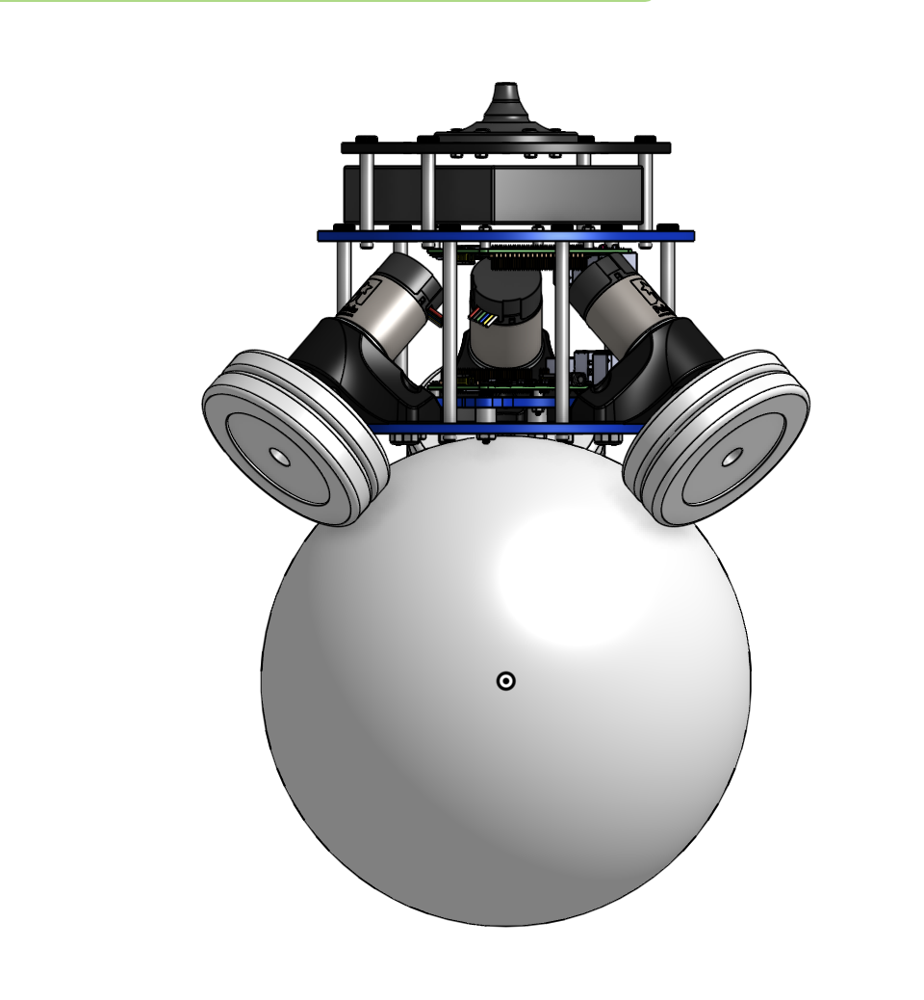

Ball-Bot: PID Controlled Balancing Robot
Overview
As part of ROB 311 at the University of Michigan, I worked on the design, integration, and control of a ball-balancing robot, an inherently unstable robotic system that balances on top of a basketball using three omni-directional drive wheels. The project required combining mechanical design, electronics, sensor integration, and control theory into a single autonomous robotic platform. The goal was to continuously maintain the robot's upright position while allowing controlled motion across the floor. I helped develop the robot's hardware and software systems, including the integration of motors, motor drivers, sensors, and an onboard microcontroller. Because the robot is dynamically unstable, it constantly tends to fall over unless corrective actions are applied in real time. To address this challenge, I implemented and tuned PID control algorithms that used sensor measurements to estimate the robot's orientation and generate corrective wheel commands. These commands adjusted the rotational speed of the omni wheels, causing the basketball beneath the robot to move in a way that restored balance. In addition to control development, I analyzed the robot's dynamics and system performance, investigating how factors such as sensor noise, controller gains, motor response, and wheel actuation affected stability. Through iterative testing and tuning, I improved the robot's ability to reject disturbances and maintain balance for extended periods of time. This project strengthened my understanding of feedback control, dynamic systems, sensor fusion, embedded programming, and electromechanical system integration while providing hands-on experience developing a real robotic platform from concept to implementation. My team recieved 3rd place out of 12 teams in the class during the end of semester competition, which tested balance and motion capabilites.
CAD Design

Photos

Skills Used
- Control Systems (PID)
- CAD
- Embedded Systems
- 3D Printing